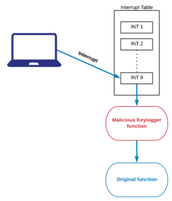

Keylogger
Malware which records every keystroke on the remote victim machine. Like Rootkit they need to be configured wisely to not be stopped by firewall.
Common operations:• Recording keystrokes
◇ login information: can be used to exploit a system
◇ chat and emails: can be used to mount targeted and social engineering attacks
• Recording the window name where the victim user was typing
• Saving the keystrokes in a log file on the victim machine
• Sending the logs to a server controlled by the penetration tester
Classification of Keylogger:•
Software keylogger:
kernel mode or user mode keyloggers; firmware based keylogger can be put in the BIOS.
•
Hardware keylogger:
PS/2 and USB keyboards can be sniffed with an additional device placed between the keyboard port and CPU.
•
Wireless keyboard sniffer:
Passive sniffers can be used to collect keyboard data in case of wireless keyboards
•
Acoustic Keylogger:
These kinds of keylogger are based on the sound made when a key is struck by the user
•
Optical keylogger:
done by a person/camera that watch the keyboard
Software Keylogger
Malware working at the Kernel level by
hijacking the operating system APIs to record keystrokes.
Normally when a key is pressed an
interrupt is called which in turn call a function that actually performs the operation intended for the key.
When instead a Keylogger is installed the
interrupt will first call the Keylogger that logs the key pressed and then it will call the original function
Hardware Keylogger
USB devices that can be installed between keyboard and computer. They log keystrokes into an internal memory.
Less common than the software keylogger they can be used by a penetration tester while performing physical security tests.
{kind=link}